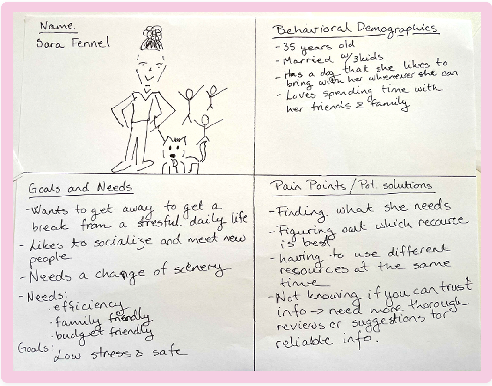

SAFETRIP! TRAVEL APPLICATION (prototype)
The pandemic has had global impact, causing unprecedented restrictions in travel. Our goal is to create a product that meets our users’ travel needs and allays their anxieties and fears post-pandemic. We believe there will be an increase in desire to travel, but at the same time, new needs and wants will become a part of travellers’ requirements.
Our goal was to create or develop a product that will ensure users that their needs and wants are taken into consideration when planning and booking a trip in this new environment.
UX/UI DESIGNER
Michele Foshee, Linda Overgärd
MY SOLUTION
See prototype:
mobile
INITIAL RESEARCH & ANALYSIS
At the discovery phase of our project, we created a proto persona compiling the traits of our target users.

We conducted user interviews to collect qualitative data. This was supplemented with a simple survey derived from user interview questions. Data from the survey was compiled 3 days after the survey was sent out.
Our participants were individuals who enjoyed traveling before the pandemic, and are eager to get back to traveling again to help us identify new concerns that have arisen from the pandemic. Our focus was on established individuals, but seeing as individuals of all ages and social situations travel, we also included individuals outside of our main demographic for comparative data.
Using the insights from five user interviews, we created an affinity diagram, user persona, and an empathy map to ascertain where our users were truly concerned when it comes to traveling post-pandemic.
What did we find?
- While budget is very important, most users value safety more and are willing to pay more to be ensured a safe experience.
- Our users generally travel multiple times per year for approximately one week at a time.
- Our users travel both domestically and internationally.
- Our users want to have some sort of plan in place before embarking on their trips.
Empathy Map
USER INSIGHT
Sara, an over-stressed working mother of two children, concerned with the safety of her family when traveling post-pandemic, needs to have an easy, efficient way to find safety data and regulations for her destination as well as her return home that will house all of her travel documentation in one place, because she worries that her destination will be unsafe and that she may not fulfill all travel requirements for entry into or return from her destination causing added fears and stressors to her trip.
During user interviews, we discovered that users value their time and budget and are very concerned with safety en route to and at their destination, but are willing to pay more if they can be assured of their safety.
Therefore, we believe that travelers need a sense of security and confidence in their planning and that we might be able to help if we make sure that all of the information and tools necessary are contained in one easy-to-use solution.
We might do this by providing comprehensive and up to date safety and regulatory information with offline document access. Doing this will allow our product to ensure users that they will not run into any ‘surprises’ during their travels due to pandemic-related or other public health related regulations.
COMPETITIVE ANALYSIS
In order to understand the strengths, weaknesses, opportunities, and threats to our product, we conducted a competitive analysis.
- Our most direct competitors are the CDC and WHO.
- Users need to visit multiple sites to get all of the information they are looking for.
- Aggregated travel sites and individual travel vendors offer safety information that is not always as thorough as our users prefer.
- None of the sites allowed users to store their travel documents in one repository.
- None of the sites offered notifications of public health and safety changes at their destinations.
ideation & brainstorming
To truly understand our users’ needs and the value of our solution, we created a Feature Prioritization Matrix and analyzed our Value Proposition. Our key findings validated that the feeling of safety is our users’ most important travel factor post-pandemic and allowed us to determine features that would best benefit them based on these concerns.
User Journey
INFORMATION ARCHITECTURE (IA) & Prototypes
The most important step in creating logical IA for this app was to determine the user flow. This step allowed me to understand and test how our users would interact with our app.
Using the IA determined in the previous step, I drew sketches of the proposed onboarding screens and inserted them into an InVision protoype. After testing the InVision prototype with two users, I made iterations to the onboarding and applied them to a low fidelity (lo-fi) prototype in Figma.
After testing the lo-fi prototype with several users, I made iterations and improved the fidelity. Another round of user testing supplied me with insights on the color choices, the logo, the splash screen, and some of the interactions, leading to the final, high fidelity (hi-fi) protoype.